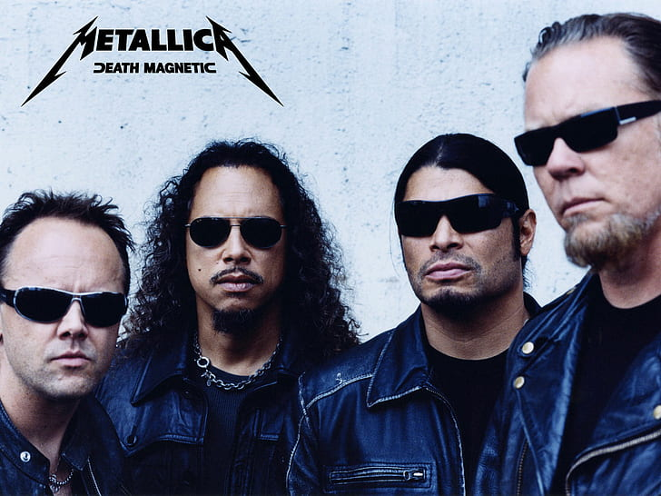
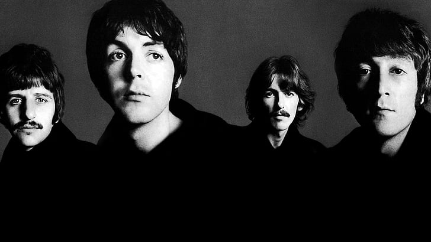

Linkin Park is an American rock band from Agoura Hills,
California. The band's current lineup comprises vocalist/rhythm
guitarist/keyboardist Mike Shinoda, lead guitarist Brad Delson,
bassist Dave Farrell, DJ/turntablist Joe Hahn and drummer Rob
Bourdon, all of whom are founding members.

Green Day is an American rock band formed in the East Bay of
California in 1987 by lead vocalist and guitarist Billie Joe
Armstrong, together with bassist and backing vocalist Mike Dirnt.
For most of the band's career, they have been a power trio[1] with
drummer Tré Cool, who replaced John Kiffmeyer in 1990 before the
recording of the band's second studio album, Kerplunk (1991).
Linkin Park - Numb
21 Guns - Holiday
Eminem - Superman
Linkin Park - In the end
Similar Artists

Metallica
Nirvana

Beatles
Coldplay